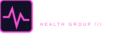

CHANNEL 01
Member connection
Frequency Connect is the first point of contact for member questions, documents and service routing.

One call. One answer. A connected service experience built around the Frequency network. Find your route, explore your options and keep your healthcare journey moving.
EXPLORE OUR SERVICE MODEL ↗ABOUT FREQUENCYOur group brings member support, policy services and provider-network coordination into one recognisable experience.
Frequency Connect is the first point of contact for member questions, documents and service routing.
Frequency Zorg is the insurance provider and handles coverage interpretation and formal determinations.
Frequency Network coordinates the provider directory and appointment-slot data feeds.
Eligible interaction records marked resolved at closure.
Listed locations showing a slot within 14 days in the latest feed.
One group identity across several specialist entities.